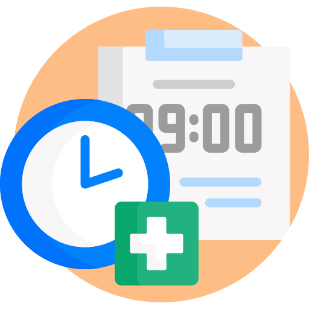
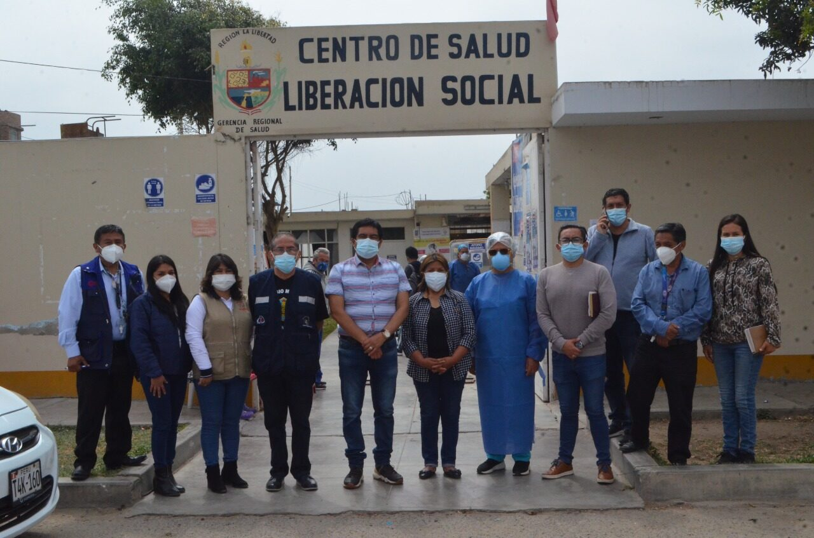
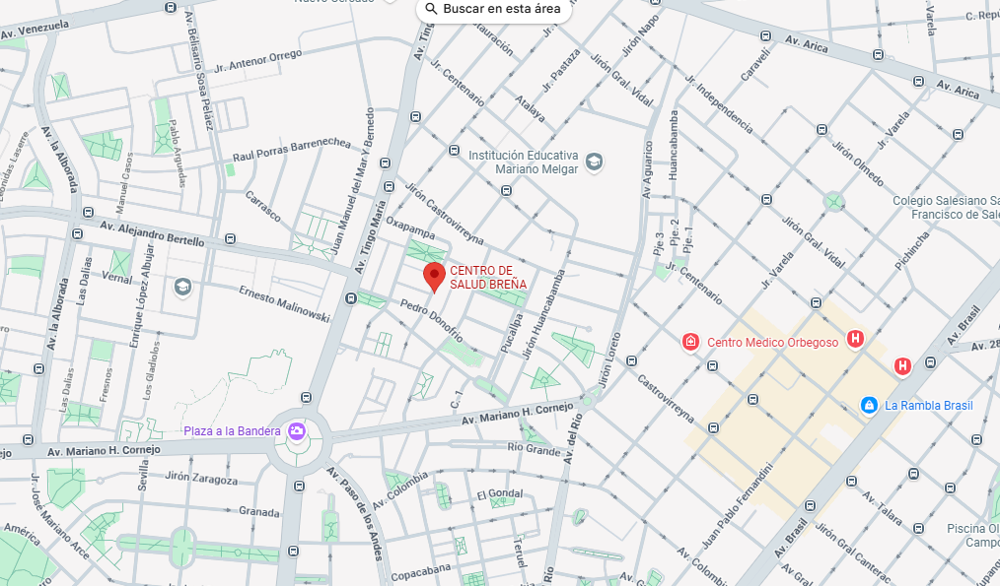

Medicina general
Atencion para dianostico y tratamiento de enfermedades comunes.
Bienvenidos al Centro de Salud, donde podran hacer sus consultas medicas y conocer los grandes beneficios al estar al cuidadado de nosotros.
Cuidamos tu bienestar y el de toda tu familia.
Atencion para dianostico y tratamiento de enfermedades comunes.
Cuidado integral de niños y adolescentes.
Control y cuidado de la salud femenina.
Curaciones, inyecciones y control de signos vitales.
Apoyo emocional y orientacion en salud mental.
Servicio de limpieza dental, tratamiento de caries y extracciones.
Radiografias(rayos X), ecografias y otros estudios para dianostico medico.
Realizacion de analisis de sangre, orina y otros examenes medicos
| SERVICIOS MEDICOS | NOMBRES | ASISTEN EL DIA |
| Medicina General | Rosario San miguel Tichsihua | Lunes - Miercoles |
| Pediatria | Luis Pedro Cajas Mejia | Lunes-Martes |
| Ginecologia | Maria jose Perez Gutierrez | Martes - Jueves |
| Enfermeria | Miguel Meza Perez | Jueves - Viernes |
| Psicologia | Angela Maria Gonzalo Juda | Miercoles - Martes |
| Odontologia | Diego Mariños Inga | Lunes - Jueves |
| Imagenes Medicas | Pepito Chanchito Patito | Todos los dias |
| Laboratorio | Angel Miguel Quispe Mamani | Todos los dias |
Los pacientes pueden realizar:
Ingrese aqui para poder solicitar una cita medica, Dale click con el mouse encima de la imagen.

| HORARIO DE ATENCION WEB | |
| Lunes- Viernes | 6:50 am - 8:00 pm |
| Sabado | 6:00 am - 3:00 pm |
| Domingo | No hay atencion |
El centro de Salud es una institucion dedicada a brindar atencion medica integral con calidad, responsabilidad y trato humano
Nuestra mision es ofrecer servicios de salud accesibles y profesionales, promoviendo la prevencion y el bienestar de la comunidad

Nuestra ubicacion es en Chorrillos (Av. Defensores del Morro 1201),

| Área | Teléfono | Correo Electrónico |
|---|---|---|
| Recepción | 987654321 | recepcion@centrosalud.com |
| Citas Médicas | 912345678 | citas@centrosalud.com |
| Emergencias | 911 | emergencias@centrosalud.com |
| HORARIO DE ATENCION | |
| Lunes- Viernes | 6:50 am - 12:00 pm 1:00 pm - 8:00 pm |
| Sabado | 6:00 am - 12:30 pm |
| Domingo | No hay atencion |
| Servicio Medico | Horas de Trabajo | Total | 25 |
|---|---|
| Medicina General | 3 |
| Pediatria | 2 |
| Ginecologia | 4 |
| Enfermeria | 5 |
| Psicologia | 2 |
| Odontologia | 1 |
| Imagenes Medicas | 3 |
| Laboratorio | 5 |
Brindamos servivios comodos y nos preocupamos por tu salud